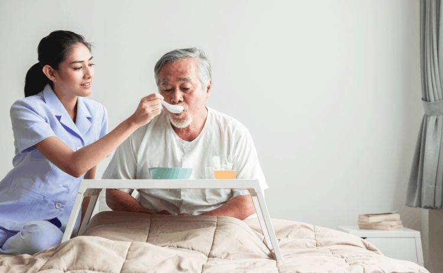

À propos CancerCare
CancerCare est une initiative d'Éducation Thérapeutique du Patient (ETP) dédiée à l'amélioration de la qualité de vie des patients atteints de cancer en Tunisie.
Nos Services

Accompagnement nutritionnel
Conseils alimentaires personnalisés pour soutenir le traitement, améliorer l’énergie et renforcer l’immunité.
ConsulterSuivi thérapeutique interactif
Suivi régulier de l’état du patient, rappels de traitement et communication continue avec l’équipe.
ConsulterAteliers bien-être & sommeil
Ateliers pratiques pour réduire le stress, améliorer le sommeil et favoriser le bien-être mental.
ConsulterCancerCare
Redéfinir le soin oncologique en Tunisie.